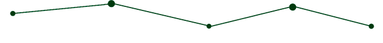

CORE BENEFITS OF ATM MACHINE
- 24/7 Access
- Convienece and Efficiency
- Reduced Bank Queues

We developed a prototype of an Automated Teller Machine (ATM) using simple materials like boxes, scissors for cutting, glue, and masking tape to attach the materials together to simulate the basic functionality of a real ATM. The primary function of this prototype is to dispense money when an external force is applied, simulating the user’s actions. It is a basic prototype that demonstrates how users can interact with a machine to withdraw cash quickly and easily.
The prototype relies on fundamental mechanical principles, Force and Motion. When the user pushes an external component (a card), it triggers a mechanism that moves the money out of the box.


.jpg)
Cutting the boxes using scissors, putting a slanted box inside, and attaching internal parts.

Final product, testing the manual machine by putting notes inside and using an ATM card to dispense money.
The ATM prototype demonstrates a basic mechanical system that dispenses money upon user interaction. While it is limited by its simplicity and materials, it provides a foundation for understanding the core concepts of force, energy transfer, and user-centered design. Future improvements would focus on durability, smooth operation, and better user guidance. This project taught us how basic mechanical systems work and how we can build functional prototypes with everyday materials.